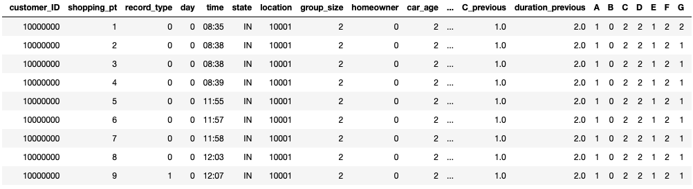

Rupesh Acharya, Northeastern University
Niyati Maheshwari, Northeastern University
Peter Vayda, Northeastern University
December 15, 2018
Insurance companies are always looking to provide better service options for their clients. Allstate is no different. The goal of this project was to predict the customer chosen insurance coverage predictions based on their insurance quote history. This prediction opens the door for many options for the company including: predicting company revenue and defining more appealing service options for customers.
To understand more about their customer insurance choices, Allstate developed a Kaggle challenge to for users to predict customer insurance coverages based on customer quote history and customer attributes. Their hope was to leverage the approaches of the Kaggle community to accomplish business goals outlined earlier.
To gain a feel for our dataset and determine the best way to proceed to generate predictions, an exploratory data analysis was performed. There were 25 columns and 665,248 entries in the provided ‘train' dataset in which the EDA was performed on.
Available data categories:
- customer id - specific id to tag entries
- shopping point - number of time customer visited
- record type - 0 or 1 if record is purchased coverage
- Day - day of week
- Time - time of day
- State - 36 US states represented, excluded states: MA, NC, SC, VT, NJ, VA, MI, AZ, CA, TX, LA, IL, AK, HI, MN
- Location - arbitrary masked location number
- group size - number of people associated with quote
- Homeowner - 0 or 1 if customer owns a home
- Car age - age of car in years
- Car value - masked car value category
- risk factor - category risk factor
- oldest age on policy - in years
- youngest age on policy - in years
- married couple - 0 or 1 for yes or no
- previous coverage - ranked previous coverage options categories
- previous coverage duration - in years
- policy coverage options- 2,304 possible combinations
- Cost - cost of quote
The dataset was rather complete only 4 columns in the training dataset were missing values car value, risk factor, previous coverage, and duration of previous coverage. This data was filled using the mode of the column. Risk factor was missing a significant portion of data, but we felt it was important to retain the feature as part of the set.
One of the most striking trends we noticed was that the last quote viewed by the customer was the purchased plan in 68% of the training set. We tested this theory with the test set and submitted into Kaggle.

In the above image, we can see that the ‘private' score of our submission is 53.2%. Given that the best score in the competition was 53.7%, our model should incorporate some measure of trying to utilize customer attributes to determine if they will use their last viewed quote for their purchased quote.
Another important attribute of our dataset is that the G category is the most likely category to not match the final quote. Through testing of our model, we were able to determine that only predicting G (and taking the final quote values for the other 6 categories) yields better results that trying to predict all 7 categories.
Our approach to predict customer insurance coverage choices was two fold. First we would develop a classification algorithm to classify customers that were likely to use the last quote given as their purchase quote. If customers were likely to use their last quote received as their purchase quote, we would subset these customers aside. If customers were likely to change to a quote different than their last quote received, then the customer records would be put into a classification model to determine G insurance coverage option (G was the most likely category to be different). Once complete, we will join the data together and process into the format for the kaggle submission file (pairs of customer id and string of all chosen plan options).
Based on the results of our EDA, we pre-processed our data to create a one line summary of customer data. This enabled simpler ingestion into ML models. First we set our model to fill missing values based on the column mode. Next, we incorporated the customer attributes, encoded categorical variables, and calculated summary metrics on their quote history. Finally, we incorporated the final coverage options offered to the customer prior to purchase and the coverage options purchased by the customer.

This image shows a look at raw data with multiple entries per customer.
This image shows summarized customer histories.
With the processed data we were then able to train classification models to achieve our goals. We trained and scored 8 types of classification models for the 8 different classification scenarios (7 coverage categories and customer choice match quote) with varying ranges of accuracy. The scoring on the ‘customer choice match quote' classification models are below. Upon reviewing our models, we selected GBM with grid search for our classification models. This decision was made because it had the highest scoring on the training data. We serialized or chosen model using the pickle package so that we can import the trained models in the prediction model.
Chosen Model:
GBM with grid search testing for customer match classification
Other Candidate Models:
Logistic regression testing for customer match classification
Random forest classifier testing for customer match classification
MLP classifier testing for customer match classification
KNN classifier testing for customer match classification
Stacked classifier testing for customer match classification
GBM for customer match classification
To receive feedback on our test set we formatted our predicted insurance coverage categories into the competition submission file formatting (customer_ID and coverage choices string pairs). We had a variety of submissions ranging from simple to complex implementations of ML models. Our best model implemented a GBM to classify whether a customer will choose all the categories of the last quote offered and, if the customer is unlikely to choose the last quote, another GBM to predict the G customer category. The chosen model yielded a submission file that was 53.0% accurate.
Chosen Submission:
Kaggle scoring of our chosen approach
Other Candidate Submissions:
Kaggle scoring of simple random forest with no hyperparameter tuning that predicts customer match and every customer coverage category
Kaggle scoring of stacking classifier predicting customer match and every customer coverage category
Our prediction application was containerized and deployed to an AWS EC2 instance. The application has a selection field where a user can input data to be predicted. The user should have the 25 categories as listed earlier. The only difference being that there should not be any record types equal to 1 in this dataset. When the HTTP request is posted, the back-end of the application preprocesses the data, imports serialized customer match model and G category selection, classifies the customer data based on the customer's likelihood to purchase the coverage of the last received quote, classifies unlikely to match customers G category selection, joins the data together again, formats to the submission file pairs (customer ID and chosen policy coverage option string), and prints to an HTML table on the web page.
Technologies Implemented
- Docker
- Flask
- AWS
In general this is a very difficult prediction problem. The best prediction model on the Kaggle leaderboard was 53.74% which is only half a percent over choosing the last quoted plan (53.27%). Only the top 20% of submissions beat the last quoted plan benchmark. Our chosen approach to classify if a customer will purchase a policy different than their last received quote and then classify their policy's G coverage option yielded a score of 53.0%. Our initial scoring on Kaggle was closer to 50% accuracy. This was when we were predicting every policy coverage category if it was predicted that the final quote wouldn't match the purchased quote. We returned to our EDA and determined that we could be more effective if we only used the G prediction model.